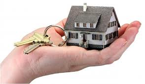

Как выбрать проект вашего будущего дома.

Люди, которые хотят построить свой собственный дом, должны заранее во всех деталях продумать то, каким он будет. Среди множества предложений различных строительных компаний, можно подобрать для себя наиболее подходящие проекты будущего жилья: типовые или эксклюзивные — но как выбрать проект дома, который будет подходить всем вашим требованиям?Первый вариант, естественно, более выгоден в финансовом плане, но при этом не отличается особыми дизайнерскими изысками. При желании любой типовой проект всегда можно слегка подкорректировать в полном соответствии со своими нуждами.

простой типовой проект деревянного дома
Прежде чем начинать строительство своего будущего жилья, необходимо взвесить все за и против. Не нужно начинать работы по возведению дома, если у вас есть хотя бы небольшие сомнения или желание что-то изменить. За помощью в решении многих вопросов желательно обратиться к опытным и профессиональным строителям.
Выбор проекта дома – типовой или свой?Основным достоинством проекта дома, выполненного по индивидуальному заказу, является его оригинальность и эксклюзивность. Если архитектор добросовестно выполняет свою работу, вы можете полностью быть уверены в том, что второго такого дома нет больше ни у кого.
Другим преимуществом, несомненно, можно считать возможность учета всех специфических потребностей вашей семьи. К примеру, вы уверены в том, что в любом загородном доме должно находиться несколько каминов, а каждая комната для гостей должна быть оснащена отдельной ванной комнатой и санузлом. Скорее всего, вы вряд ли сможете найти типовой проект, который будет полностью соответствовать этим требованиям.

оригинальный индивидуальный проект загородного дома
Поэтому лучше сразу отправляться к специалистам, которые разработают индивидуальный проект дома, отвечающий всем вашим нуждам. А вот минусом такого проекта, как не трудно догадаться, станут довольно-таки высокие расценки. Помимо этого, следует очень тщательно подходить к выбору архитектора, так как есть вероятность наткнуться на мастера с низкой квалификацией. Если он произведет неправильные расчеты технических характеристик дома, то при строительстве может возникнуть много проблем и неприятностей. Да и отстроенный дом, вполне вероятно, может простоять совсем недолго.
Поэтому, если вы решили остановить свой выбор на изготовлении индивидуального проекта будущего жилья, помните о том, что к выбору архитектора и других мастеров следует подходить с крайней ответственностью.
Но все же, как показывает практика, большинству людей лучше отдать предпочтение типовым проектам домов, в которые, при необходимости, можно внести желаемые коррективы. Естественно, нужно помнить о том, что каждый проект все равно придется привязывать к той или иной местности, поэтому корректирующие работы при помощи опытного архитектора неизбежны.
Что нужно учитывать при выборе проекта дома?Прежде чем выбирать тот или иной проект дома, постарайтесь ответить на несколько вопросов. В первую очередь – какова будет площадь вашего будущего жилья? По мнению многих, загородный коттедж не должен занимать более 200 кв.м. Но здесь, конечно, нужно больше опираться на сумму денежных средств, предназначенную для строительства, и количество людей, которые будут проживать в доме.

проект загородного коттеджа площадью 150 кв м
Вариант минимум должен включать в себя по одной комнате на каждого человека (примерно по 12 кв.м.), одну общую гостиную (20 кв.м.), кухня (10 кв.м.), санузлы, коридоры и прочее. По предварительным подсчетам общая площадь будет находиться в пределах 100 кв.м., которых вполне хватит для проживания одной семьи.
При выборе дома с одной и той же площадью, но разным количеством этажей (одноэтажным и двухэтажным), желательно выбирать коттедж с большим количеством этажей (в особенности, если строение оснащено мансардой). Благодаря этому за одни и те же деньги можно получить большую площадь.

проект двухэтажного дома с мансардой и подвалом
Прихожая должна быть просторной, с шириной 1,5 метра и длиной 5-6 метров. Подсобные помещения следует располагать в подходящих для этого местах: кладовая рядом с кухней, встроенный шкафчик для обуви и одежды – в прихожей.
КоридорКоридор должен быть удобным. Если у тамбура площадь составляет не более 2,5 кв.м., а места для размещения шкафа-купе попросту не хватает, то в самом коридоре должно быть достаточно места для того, чтобы человек мог свободно раздеться и повесить свою верхнюю одежду.
ЛестницаЛестница, несомненно, относится к одним из самых значимых элементов любого интерьера. Выбирая лестницу для дома, особое внимание требуется уделить ее сочетанию с дизайном и планировкой вашего дома в целом.
Все современные лестницы условно делятся на две группы: межэтажные лестницы и лестницы специального назначения. Первые из них, как не трудно догадаться из названия, используются для соединения этажей друг с другом. Лестницы такого вида должны быть надежны и удобны в эксплуатации, так как они ежедневно подвергаются различным нагрузкам.
Удобство эксплуатации межэтажной лестницы включает в себя несколько характеристик: ширина прохода, угол подъема, безопасное ограждение лестницы, количество и крутизна поворотных элементов.

широкая межэтажная деревянная лестница
Помните о том, что лестница в доме, как правило, занимает довольно-таки значительную площадь. У удобной лестницы ступени должны обладать высотой не более 15 см. и шириной не менее 25 см. При высоте потолка в 2,7 метра длина лестницы должна составлять 4 метра. Прибавив пространство, необходимое для того, чтобы зайти на лестницу, к ее длине придется добавить еще один метр при общей ширине не менее 85 см. Под лестницей можно расположить шкафы-купе или небольшие кладовые.
КухняКухня является одним из самых главных помещений во всем доме, ведь человек проводит в ней немало времени. По этой причине ее планировка должна быть полностью гармоничной и удобной в своей эксплуатации. В процессе проектирования кухни следует учитывать количество окон, конфигурацию стен, особенности ее расположения в доме, особого внимания заслуживает система хранения продовольственных и других запасов.
Многие проекты коттеджей предусматривают наличие небольшой кладовой поблизости от кухни.

небольшая кладовая рядом с кухней в загородном доме
Различные дополнительные хранилища, благодаря которым владельцы дома могут существовать автономно, располагаются в подвале.
ГостинаяГостиная – это место, где домашние проводят долгие холодные зимние вечера за просмотром телевизора или семейного застолья вместе с гостями. Великолепно, когда в гостиной есть уютный и теплый камин – благодаря нему атмосфера в комнате становится еще более приятной.
СпальняРасчет площади спальни должен осуществляться с учетом расстановки минимального набора мебели. К примеру, в спальне супругов обязательно должна находиться двуспальная кровать и встроенный шкаф (при отсутствии гардеробной).

просторная спальня со встроенным шкафом
Естественно, в комнате нужно оставить необходимое пространство для свободного перемещения. При этом спальню желательно расположить как можно дальше от различных шумовых источников.
Как правильно выбрать проект дома – заключительные рекомендации- Выбирать проект коттеджа необходимо с учетом количества людей, которые будут проживать в нем и гостей. Сколько человек обычно находится в доме? Сколько человек будет проживать в нем постоянно, а сколько – время от времени (к примеру, родственники из другого города или престарелые родители).
- Немаловажный момент – выбор проектировщика, которого найти не так уж и просто, как может показаться. Тщательно просматривайте различные предложения в газетах, интернете, специализированных изданиях.
При этом помните о том, что работа проектировщика должна нравиться, прежде всего, именно вам, а не только его предыдущим клиентам. На сегодняшний день во многих компаниях работают молодые специалисты, поэтому обращать внимание нужно, прежде всего, на их уровень профессионализма, и только после этого – на репутацию всей компании в целом. Естественно, будет просто замечательно, если вы сможете увидеть работу специалистов в реальности еще до того, как закажете их услуги.
Ну и, напоследок. Прежде чем обращаться за помощью к строителям, архитекторам, проектировщикам, необходимо четко определиться с тем, что же вы хотите получить в результате. Обязательно нужен точный и понятный план желаемого, на основе которого и будут осуществляться дальнейшие работы.
Вот примерно так и нужно выбирать проект вашего будущего дома ...
В добрый путь ...
По материалам сайта : http://proekt-sam.ru/proektdoma/kak-vybrat-proekt-doma.html